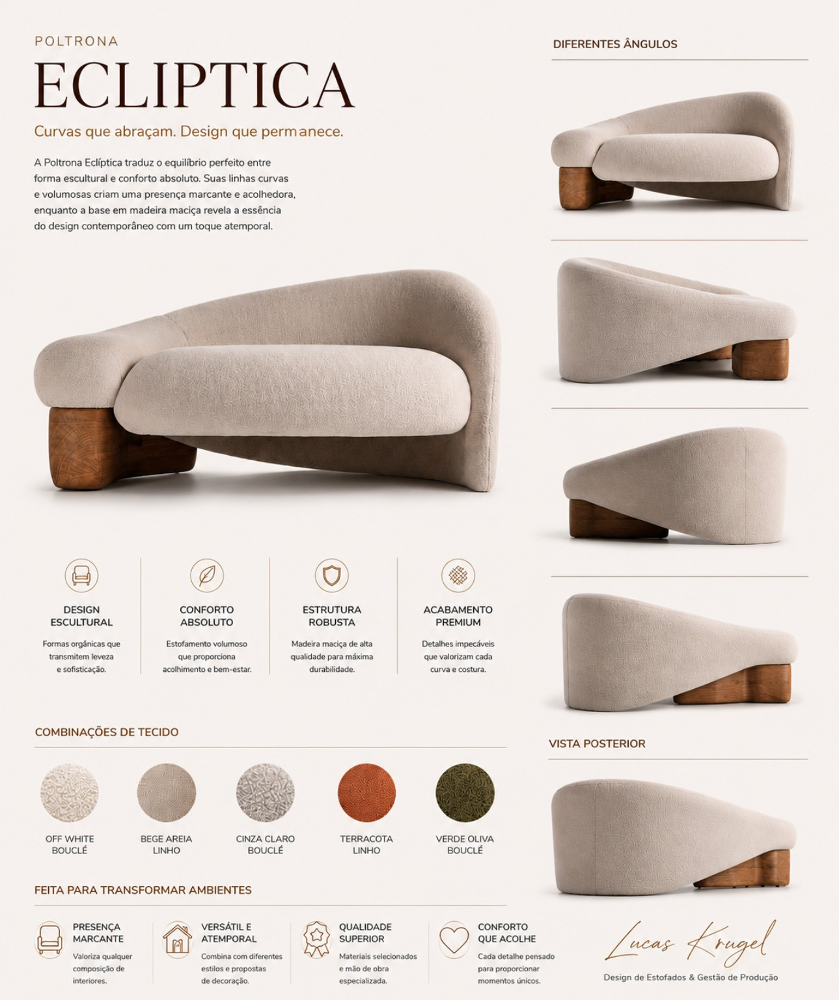

Gestão de Produção
Programação, priorização, acompanhamento diário, metas, produtividade e fluxo entre setores.
GESTÃO INDUSTRIAL • ESTOFADOS • PRODUTO
Sou Lucas Krügel, profissional da indústria moveleira com atuação em gestão de produção, desenvolvimento de estofados, melhoria de processos e coordenação de equipes. Trabalho conectando projeto, fábrica e entrega para reduzir ruído, aumentar produtividade e transformar ideias em produtos executáveis.

PORTFÓLIO AUTORALMeu diferencial não é só desenhar ou só gerenciar.
01 — SOBRE
Minha trajetória na indústria evoluiu da execução operacional para a liderança da produção, assumindo responsabilidades sobre programação, acompanhamento de pedidos, qualidade, gargalos, logística, estoque, expedição e desempenho de equipe.
Essa vivência me deu uma visão prática: um bom projeto precisa ser bonito, confortável, vendável e, principalmente, possível de fabricar com consistência. Por isso, em projetos de estofados, penso desde a construção e materiais até montagem, acabamento, tempo de produção e repetibilidade.
Também utilizo ferramentas digitais e inteligência artificial para acelerar pesquisa, documentação, comunicação, organização e testes de ideias.
02 — COMPETÊNCIAS
Programação, priorização, acompanhamento diário, metas, produtividade e fluxo entre setores.
Concepção com foco em estética, conforto, estrutura, montagem, acabamento e viabilidade industrial.
Mapeamento de gargalos, tempos de execução, retrabalho, movimentação e oportunidades de padronização.
Acompanhamento de falhas, desvios, acabamento, avarias e correções antes da expedição.
Distribuição de atividades, cobrança de resultado, acompanhamento individual e alinhamento de prioridades.
Uso de IA para análise, documentação, organização, conteúdo, automação e aceleração de decisões.
03 — EXPERIÊNCIA
Evolução rápida de função operacional para posição de liderança, assumindo acompanhamento de produção, programação, prioridades, qualidade, estoque, logística, expedição, gargalos e coordenação de equipes.
Base prática em construção e montagem, com compreensão direta de encaixes, sequência produtiva, dependências entre setores e problemas que surgem quando o projeto não conversa com a fabricação.
Atuação orientada a produto, buscando unir presença visual, ergonomia, estrutura, materiais, qualidade percebida e eficiência de execução.
04 — MÉTODO
Objetivo, cliente, uso, estética, preço-alvo e restrições.
Forma, proporção, conforto, estrutura, materiais e detalhes.
Sequência produtiva, montagem, acabamento, repetibilidade e custo.
Protótipo, falhas, ajustes, padrão de qualidade e entrega.
05 — PORTFÓLIO AUTORAL
Uma seleção de estofados e mobiliário desenvolvidos com visão de produto, linguagem contemporânea e atenção à execução.
06 — PARA CLIENTES E EMPRESAS
Criação e refinamento de conceitos para sofás, poltronas, cadeiras e outros produtos estofados.
Análise prática para reduzir complexidade, retrabalho e problemas de montagem ou acabamento.
Estruturação de acompanhamento de produção, prioridades, cronometrias, metas e rotinas de gestão.
Mapeamento de atrasos, falhas de fluxo, desperdícios, retrabalho e pontos de perda de produtividade.
PRINCÍPIOS DE TRABALHO
07 — CONTATO
Se você representa uma empresa, indústria, marcenaria, estofaria, escritório de design ou precisa desenvolver um produto estofado, entre em contato para conversarmos sobre objetivo, escopo e viabilidade.